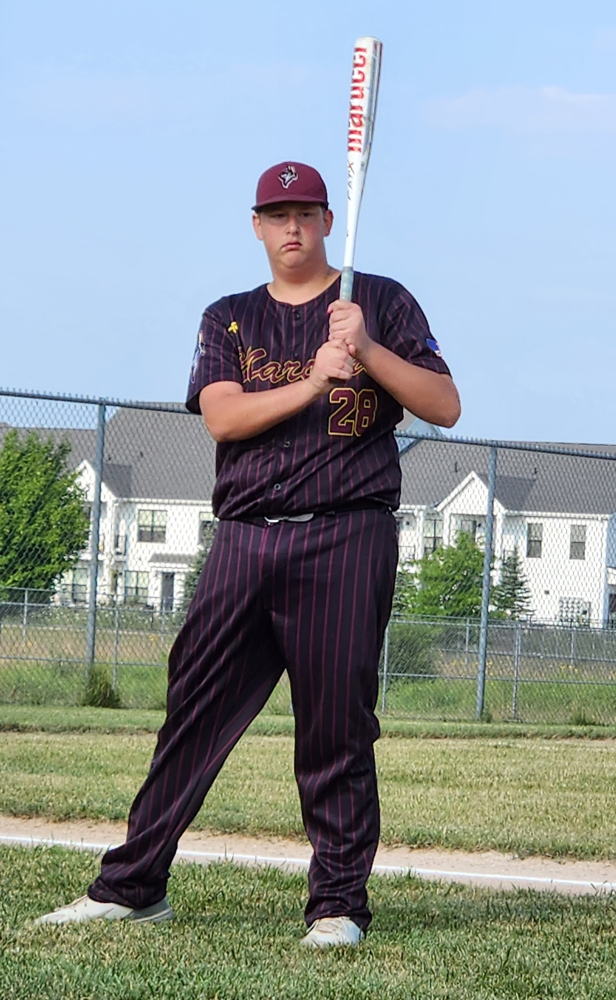
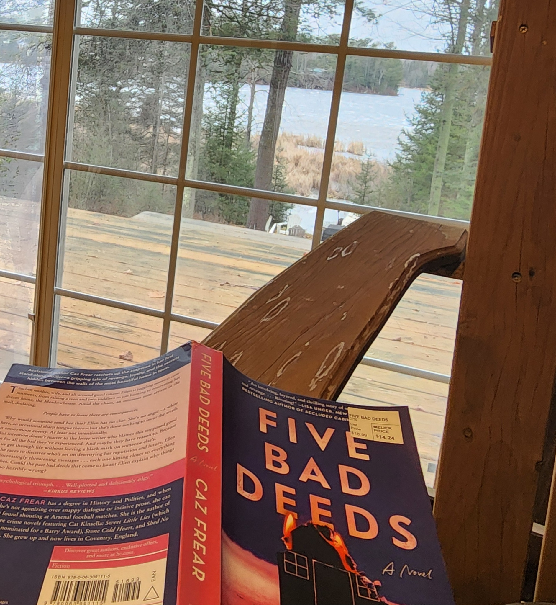
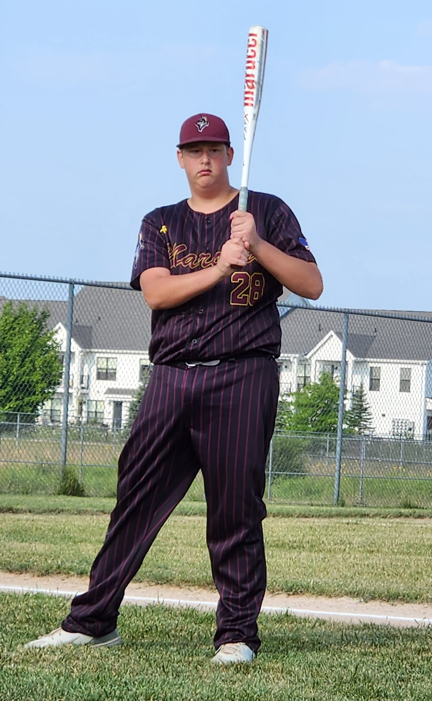
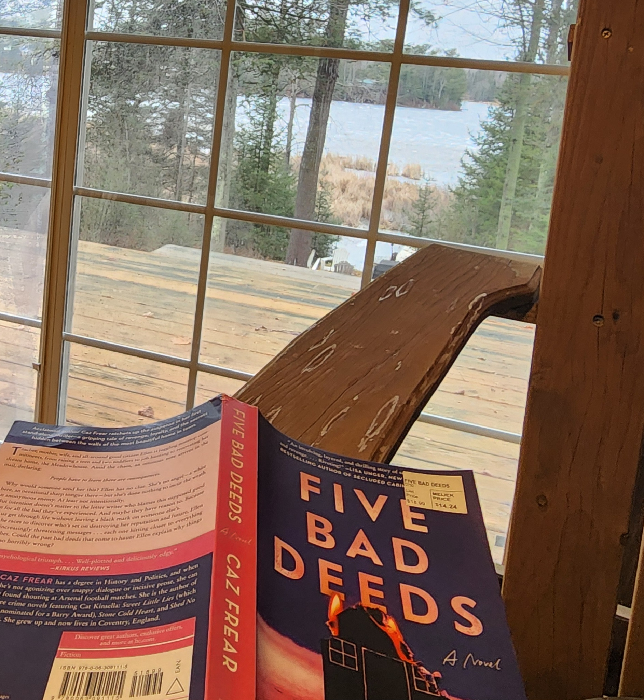

Welcome to the world of 'Copen'

I am a mom to a teenager and a teacher. There are times that we can keep life all together and there are times that we look a little bit like small chaos!
.jpg)
Spend time with those you love, one of these days you will say either," "I wish I had," or "I'm glad I did!""
 




| Where we visited | When we visited | Who we went with | Highlights |
|---|---|---|---|
| Texas | 2011 | Aunt Barb | visited family, went to Landa Park and rode a train |
| Florida | 2012 | Grandma | All the super amazing Disney stuff! |
| Georgia | 2014 | Just the two of us | Fishing, Atlanta Aquarium, swimming, and World of Coke |
| Costa Rica | 2019 | Liz, Sean, Uncle Pete and Uncle Chris | zipling, horseback riding, ATV riding, fishing, surfing and swimming |
| Texas | 2022 | Grandma | San Antonio Riverwalk, Christmas with the family, family pictures and holiday lights at a botanical garden |
| Arizona | 2023 | Just the two of us | Pre-season Brewers games, visited family, hiked and saw wild horses |